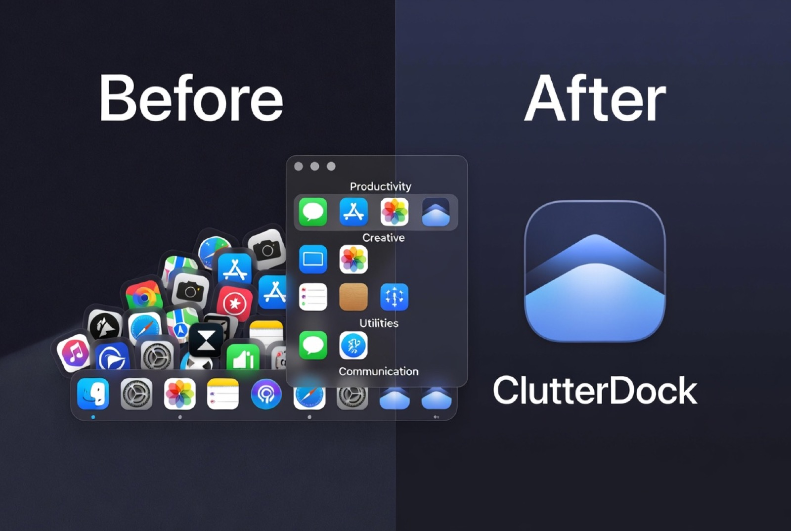

1
See the clutter
Too many icons on the Dock or tray. Hard to find the right app. Everything competes for attention.
Before: a pile of icons fighting for space. After: clean stacks of apps, files, folders, and URLs — one hotkey away. ClutterDock organizes what you launch every day without replacing the system Dock.

Group what you open all day into folders. Launch faster. Keep the Dock calm.
Too many icons on the Dock or tray. Hard to find the right app. Everything competes for attention.
Drop apps, files, folders, and URLs into named stacks — Productivity, Creative, Client work, whatever you need.
Press ⌘⇧D (Mac) or Ctrl+Shift+D (Windows). Grid or list. One calm place instead of icon chaos.
Public APIs only. No Dock replacement. Just faster access to what you open all day.
Grid or list, drag to reorder, sort modes, and running indicators — without replacing the system Dock.
Drop in files, folders, and URLs alongside apps. One place for the things you actually open.
Global hotkey, arrow navigation, ⌘1–9, and (with Pro) per-folder hotkeys and search-all.
Recents from launch history and a live Running list keep momentum without manual tidy-up.
Switch whole sets of folders for home, work, or deep-focus modes in one step.
Native Swift on macOS 14+. Electron tray app on Windows 10/11. Same product idea, platform-native feel.
Start with 5 folders and 20 items each — enough for most people. Unlock unlimited stacks, workspaces, and power tools once, forever.
Install free. Upgrade later in Settings → Pro when you’re ready.
Native app for macOS 14+. Global hotkey ⌘⇧D. First open: right-click → Open.
Download for MacTray launcher for Windows 10/11. Ctrl+Shift+D.
Download for WindowsReleases: github.com/rbakman-rgb/clutterdock · Site: clutterdock.com · Also: clutterdock.app
Unsigned builds need one extra click until Apple notarization ships.
Unzip → drag ClutterDock.app to Applications → right-click → Open the first time (or System Settings → Privacy & Security → Open Anyway).
Right-click the Dock icon → Options → Keep in Dock. Default hotkey is ⌘⇧D (changeable in Settings).
If Windows warns on the installer, choose More info → Run anyway (unsigned until code signing). Look for ClutterDock in the system tray.
Same product, new name. Your folders migrate automatically from the old
Application Support folder. License keys (SDPRO-…) still work.